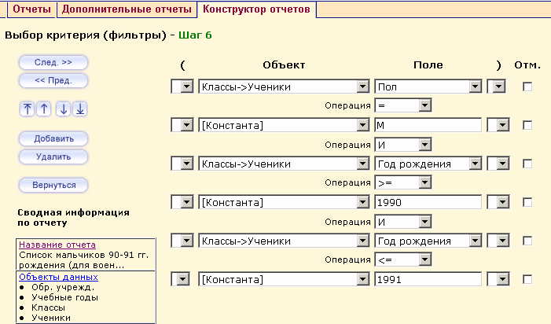

Если вам нужны не все значения полей выбранного вами объекта, а только часть, то вы можете отсечь ненужные, установив соответствующие фильтры. Фильтры могут быть достаточно сложными и включать несколько условий, выражения в скобках, константы, соединенных между собой логическими операторами (И, ИЛИ, >= и т.д.), но фильтр всегда должен включать в себя четное количество строк. В противном случае на следующий шаг перейти не удастся.
При добавлении двух и более фильтров, появляются кнопки для изменения порядка применения этих фильтров к выводимым данным:
Примечание: Сравнивать можно только поле с константой (или значением из списка). Поле с полем и константу (либо значение из списка) с константой (либо значением из списка) сравнивать нельзя.
Примечание: Для объектов типа «Список» автоматически появляется многоточие после названия объекта. Например: Социальное положение…
В рассматриваемом отчете «Список мальчиков 90-91 гг. рождения» необходимо из всех учащихся отсечь всех девочек, а также учеников, родившихся ранее 1990 или позднее 1991 годов, вне зависимости от пола. В этом случае фильтр будет состоять из трех условий и будет выглядеть следующим образом:

После определения нужных фильтров нажимаем на кнопку След. >> для перехода на Шаг 7 - Выбор порядка сортировки.